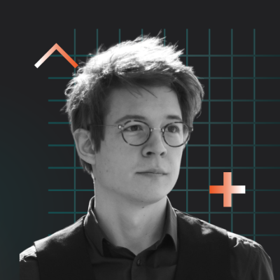
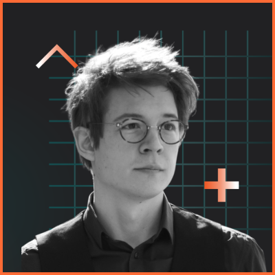
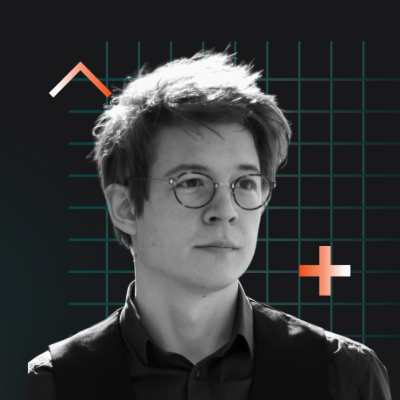

A — Photo pure
Crop centré, fond original conservé.
Recommandé : la photo source porte déjà la brand (grille teal + glyphes orange).

400 / display
32 · 24 · 16 (commentaires)
B — Bordure orange 4px
Cadre #ff6b35 4px (10px en HD).
Signal brand discret — pop dans un feed gris.

400 / display
32 · 24 · 16 (commentaires)
C — Atelier (contraste +8%)
Sharpening léger, contraste poussé.
Ton "industriel" — visage plus marqué.

400 / display
32 · 24 · 16 (commentaires)